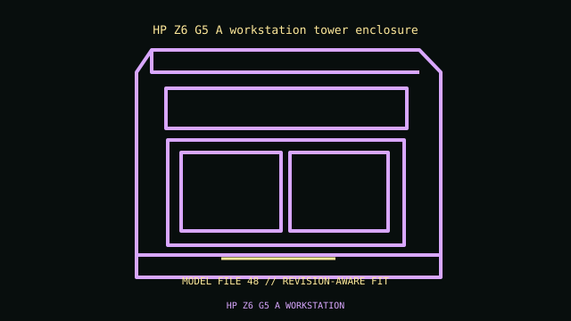

[ IDENTIFIED ENCLOSURE // PROFESSIONAL WORKSTATION ENCLOSURES ]
HP Z6 G5 A workstation tower enclosure
Approx. 445 × 169 × 465 mm H×W×D; configuration dependent. Proprietary AMD Threadripper PRO 7000 WX board, HP PSU, memory duct and GPU support hardware.

VARIANT / ARCHIVAL CAVEAT: Z6 G5 A is AMD, not Intel Z6 G5. CPU retention, ducts, GPU power and cooling are platform-specific; match product number.
Mechanical specifications and fit
| Catalog identity / revision | HP Z6 G5 A workstation tower enclosure |
|---|---|
| Dimensions / construction | Approx. 445 × 169 × 465 mm H×W×D; configuration dependent. |
| Drive bays / storage | 3.5/2.5-inch positions and front access bays vary by storage/media kits. |
| Board, system and compatibility | Proprietary AMD Threadripper PRO 7000 WX board, HP PSU, memory duct and GPU support hardware. |
| Revision / service note | Z6 G5 A is AMD, not Intel Z6 G5. CPU retention, ducts, GPU power and cooling are platform-specific; match product number. |
Preservation and installation notes
Identify the product number/service tag and retain the matched power supply, GPU support, board, fan ducts and storage cage; workstation submodels may share an outer shell but not internals.
- Photograph the complete model label, assembly revision and option identifiers before opening; keep matching covers, brackets, shields, trays and fasteners together.
- Check the manufacturer’s configuration for the selected processor and GPU power/cooling requirements before substituting cards or power modules.
Manufacturer manuals and model-specific sources
- HP Z6 G5 A workstation tower enclosure manufacturer specifications / product referenceModel-specific manufacturer specification, owner/service manual or technical reference; verify exact model and revision.
- HP Z6 G5 A workstation tower enclosure manual and service documentationModel-specific manufacturer specification, owner/service manual or technical reference; verify exact model and revision.
Where normalized dimensions or option-specific limits are not published, the record states that limitation rather than asserting a generic fit. Verify the cited manual revision against the specimen.